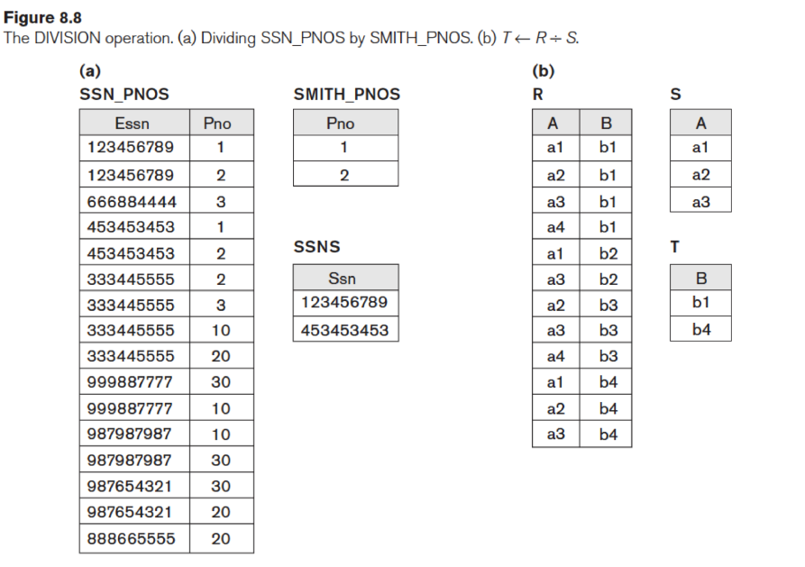
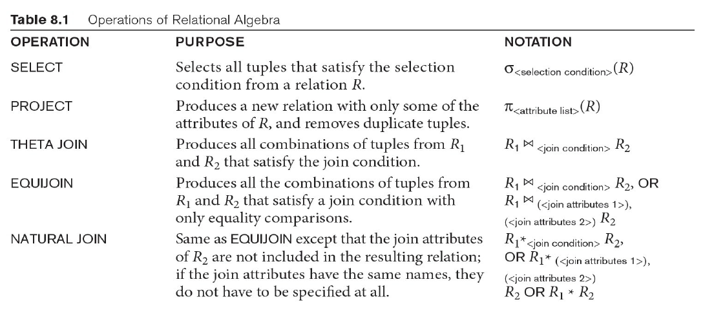
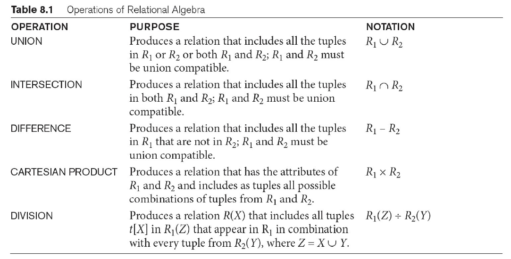
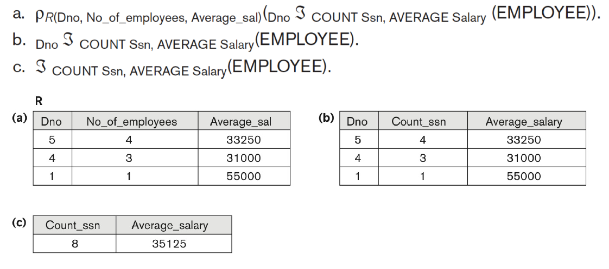
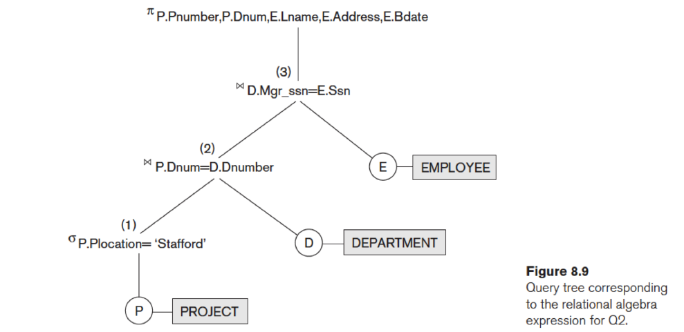

Relational Algebra
Relational Algebra
Relational algebra is the basic set of operations for the relational model.
- Provides a formal foundation for relational model operations
Raltional Algebra Operations
Unary Relational Operations
SELECT (symbol: σ (sigma))
- usage: acts as a filter:
- σ < selection condition>(R)
- e.g. σDNO = 4(EMPLOYEE) means Select the EMPLOYEE tuples whose department number is 4;
- e.g. σSALARY > 30, 000(EMPLOYEE) means Select the EMPLOYEE tuples whose salary is greater than $30,000;
- commutative 交换律
- σ < condition 1>(σ < condition 2>(R)) = σ < condition 2>(σ < condition 1>(R))
- replace a cascade of SELECT operations by a conjunction of all the
conditions
- σ < condition 1>(σ < condition 2>(R)) = σ < condition 1> AND < condition 2>(R)
PROJECT (symbol: π (pi))
- usage: keeps certain columns, and discards the other columns
- π < attribute list>(EMPLOYEE)
- < attribute list> is the desired list of attributes from relation R
- The project operation removes any duplicate tuples
- not commutative !!
Assignment operation ←
- usage: assign a algebra expression a name
- DEP5_EMPS ← σDno = 5(EMPLOYEE)
RENAME (symbol: ρ (rho))
- usage: rename the attributes or the relation
- ρS(B1,B2,...,Bn)(R) changes relation name to S and attributes names to B1, B2, …, Bn
- ρS(R) changes relation name to S
- ρ(B1,B2,...,Bn)(R) changes attributes names to B1, B2, …, Bn
- RESULT ← πFname, Lname, Salary(DEP5_EMPS) = ρRESULT(πFname, Lname, Salary(DEP5_EMPS))
- RESULT(F,L,SAL) ← πFname, Lname, Salary(DEP5_EMPS) = ρRESULT(F,L,SAL)(πFname, Lname, Salary(DEP5_EMPS))
Relational Algebra Operations From Set Theory
UNION ( ∪ )
- the result of R ∪ S is a relation that includes all tuples that are either in R or in S or in both.
- commutative and associative 满足交换律和结合律
INTERSECTION ( ∩ )
- the result of R ∩ S is a realtion that includes all tuples that are in both.
- commutative and associative 满足交换律和结合律
DIFFERENCE ( – ) or MINUS, or EXCEPT
- The result of R–S, is a relation that includes all tuples that are in R but not in S.
- Two operand relations must be ‘type compatible’
- not commutative 不满足交换律 R − S ≠ S − R
CARTESIAN PRODUCT ( × ) or CROSS JOIN
- This operation is used to combine tuples from two relations in a combinatorial fashion.
- if R has n attributes, S has m attributes, then R × S has n + m attributes.
- if R has nR tuples (denoted as |R| = nR ), S has nS tuples, then R × S will have nR * nS tuples.
- The two operands do NOT have to be ‘type compatible’
Binary Relational Operations
JOIN ( ⋈ )
- usage: identify and select related tuples from the result of CARTESIAN PRODUCT of two relations
- R⋈ < join condition>S
- EMP_DEPENDENTS ← EMPNAMES × DEPENDENT
+ACTUAL_DEPENDENTS ← σSsn = Essn(EMP_DEPENDENTS)
= ACTUAL_DEPENDENTS ← EMPNAMES⋈Ssn = EssnDEPENDENT
- EMP_DEPENDENTS ← EMPNAMES × DEPENDENT
NATURAL JOIN ( * )
- usage: join by (all) same name attributes and then remove the duplicate columns
- DEPT_LOCS ← DEPARTMENT * DEPT_LOCATIONS
DIVISION ( ÷ )
- usage: finds tuples that are related to all tuples in another
relation



AGGREGATE FUNCTIONS
- ℱFUNC ATTRIBUTE(RELATION)
- e.g. ℱMAX SALARY(EMPLOYEE) retrieves the maximun salary from the employee
- e.g. ℱCOUNT Ssn, AVERAGE Salary(EMPLOYEE) computes the count (number) of employees and their average salary
- function:
- SUM
- AVG
- MAX
- MIN
- COUNT
- SUM
- Combined with grouping
- Grouping attribute placed to left of ℱ
- e.g. DnoℱCOUNT Ssn, AVERAGE Salary(EMPLOYEE)
Above operation groups employees by Dno

Additional Relational Operations
- OUTER JOINS
- LEFT OUTER JOIN
- keeps every tuple in the left relation R in the result of R ⋈R S, if no matching tuple is found in S, then padding them with null values as needed
- RIGHT OUTER JOIN
- keeps every tuple in the right relation S in the result of R ⋈L S, if no matching tuple is found in R, then padding them with null values as needed
- FULL OUTER JOIN
- keeps every tuple in the both relation in the result of R ⋈F S, when no matching tuples are found, padding them with null values as needed
- LEFT OUTER JOIN
Query Tree
